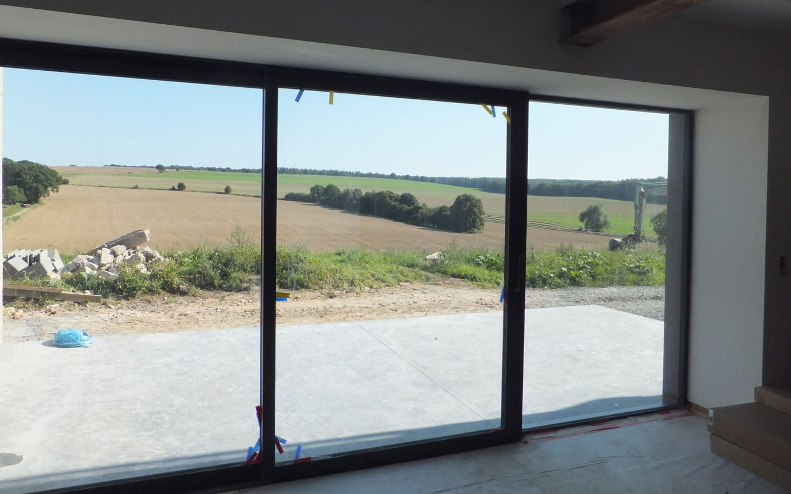

L’ancienne grange concernée par cette transformation est située au sein d’une ferme en “U” ouverte sur l’espace public. L’intention des maîtres de l’ouvrage était de transformer cette ancienne étable mitoyenne en habitation unifamiliale
L’isolation du bâtiment a été réalisée à l’intérieur de l’enveloppe existante afin de conserver les maçonneries extérieures en moellons.
Les nouvelles baies sont marquées par des encadrements métalliques. La façade avant est percée de fenêtres verticales. La façade côté jardin est, quant à elle, largement ouverte pour bénéficier d’un maximum de luminosité et d’une vue dégagée sur la campagne avoisinante.
La terrasse en béton lissé est traitée comme le prolongement de l’espace intérieur. Les plafonds en voussettes enduits à la chaux et le mur de pierre laissé apparent rappellent le caractère ancien du bâti.L’association de ces éléments contraste, tout en s’accordant parfaitement.
Projet précédent Projet suivant